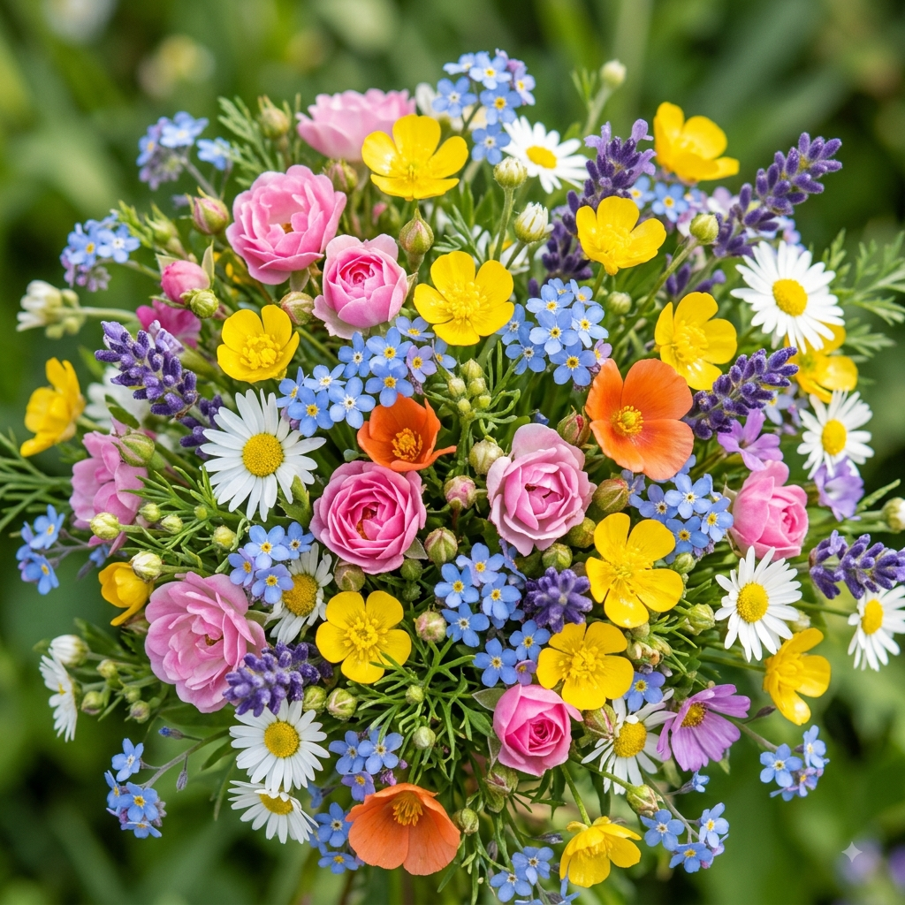

Apresentação
Você sabe qual é a sua flor favorita? Algumas representam amor, outras amizade, esperança ou renovação. Neste espaço, vamos descobrir juntos os significados e encantos escondidos em cada pétala.
Fonte: Editorial Bloom House
Explore um mundo cheio de cores, aromas e beleza, conheça diferentes espécies e descubra o encanto que existe em cada flor
Por: Heloisa Sene

Você sabe qual é a sua flor favorita? Algumas representam amor, outras amizade, esperança ou renovação. Neste espaço, vamos descobrir juntos os significados e encantos escondidos em cada pétala.
Fonte: Editorial Bloom House
Cada espécie possui necessidades únicas de iluminação e rega. Enquanto os girassóis amam luz direta durante o dia todo, outras plantas preferem a luz indireta para proteger suas pétalas delicadas. Fique atento às folhas para entender o que sua planta precisa!
Fonte: Manual de Jardinagem Prática
As cores das flores carregam sentimentos e mensagens especiais. As vermelhas simbolizam amor e paixão, as amarelas transmitem alegria e amizade, enquanto as brancas representam paz e renovação. Qual cor combina mais com o seu momento atual?
Fonte: Guia de Simbologia Floral e Botânica
Quer trazer um pouco de natureza para dentro de casa? Espécies como a Espada-de-São-Jorge, a Jiboia e o Lírio-da-Paz adaptam-se super bem a apartamentos e locais com pouca luz solar direta. Além de lindas, ajudam a purificar o ar!
Fonte: Revista Casa & Jardinagem